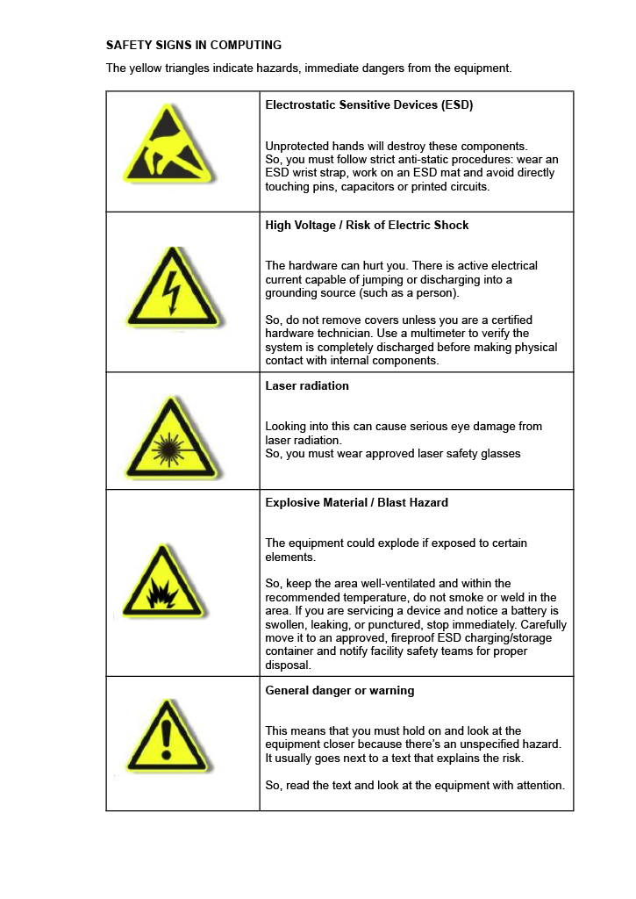
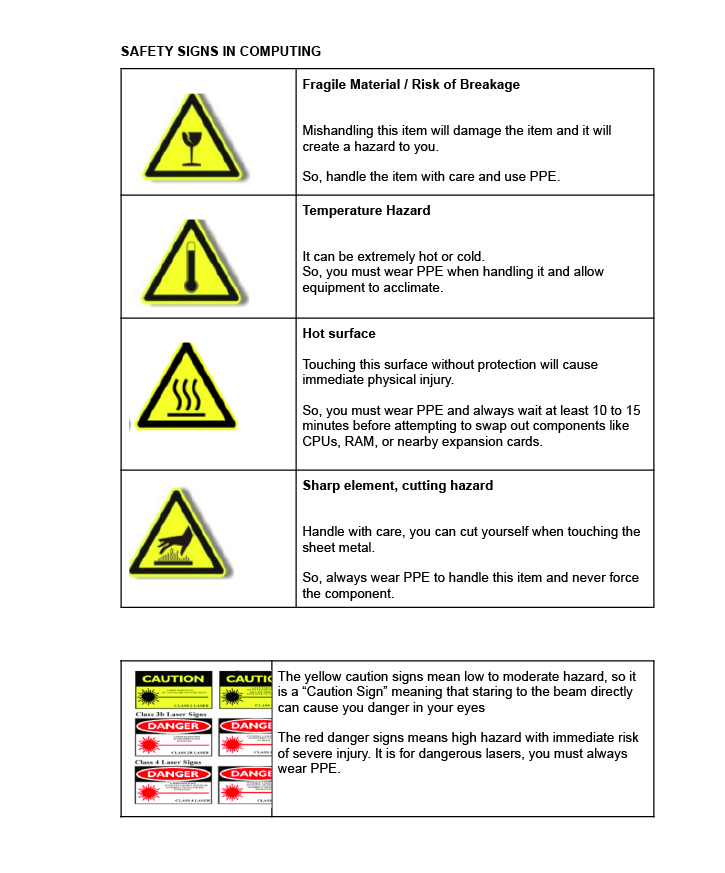
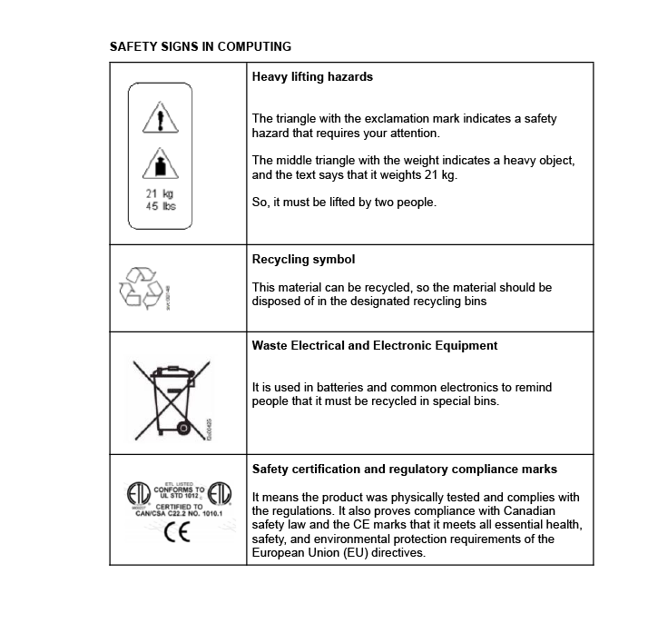
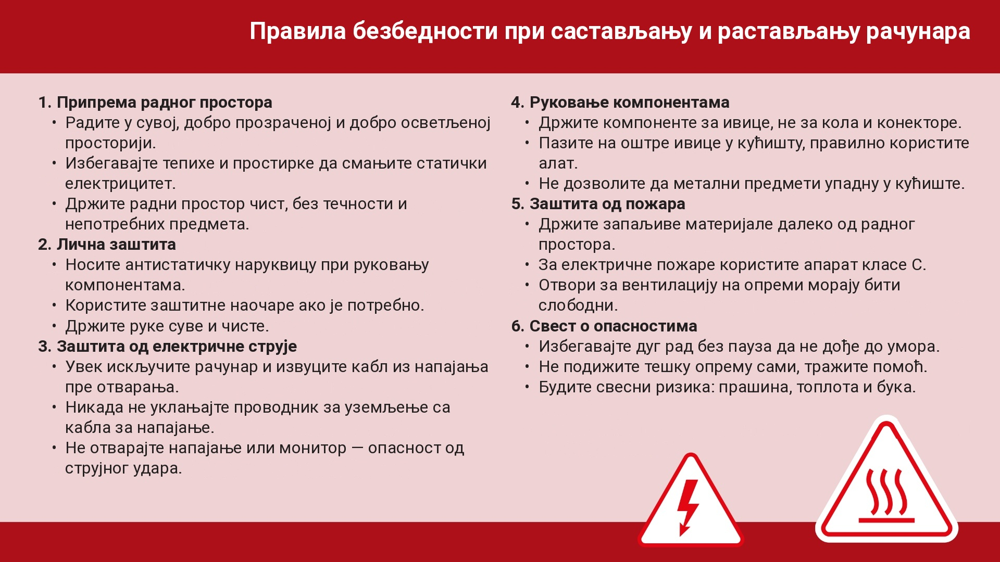

Протоколи безбедности¶
Пре рада са рачунарским хардвером, неопходно је разумети и применити правила безбедности која штите не само опрему, већ и људе који њом рукују као и животну средину. Чак и мале грешке током растављања или склапања могу резултирати повредама, оштећењем компонената или опасностима као што су пожар и електрични удар. Пратећи правила безбедности, осигуравате безбедно окружење за учење и развијате добре професионалне навике које ће вам служити током целе каријере.
У овом одељку, прегледаћемо осам кључних области безбедности којих ћете се прджавати у вашем раду:
Безбедност на радном месту
Спречавање несрећа
Општи фактори ризика
Општи фактори ризика у руковању рачунаром
Сигурносни знаци
Превентивне мере у радионици
Методе и системи за гашење пожара
Прва помоћ
Електрицитет у рачунару: Професионални ризици и заштита животне средине¶
1) Безбедност на радном месту¶
То је скуп техника и процедура усмерених на елиминисање или смањење ризика од несрећа на радном месту и штете коју могу изазвати: првенствено људима, али и имовини и животној средини.
Њен циљ је спречити несреће на радном месту избегавањем њиховог настанка или минимизирањем њихових непосредних последица на људе и имовину. Стога, безбедност на радном месту не узима у обзир само несреће које изазивају повреде већ и оне које би потенцијално могле да их изазову.
2) Спречавање несрећа¶
Безбедност има за циљ спречавање несрећа на радном месту, које су у суштини абнормални, нежељени и нежељени догађаји који се дешавају неочекивано и обично су избегавани. Они прекидају нормалну радну активност и могу изазвати повреде људи. Постоје ситуације које могу довести до несрећа, било са повредама или без (инциденти).
Да би се спречиле несреће, неопходно је:
Знати ризике којима смо изложени
Разумети да се несрећа може десити у било ком тренутку
Бити свестан да се може десити и вама
Разумети стварне последице несрећа
Бити информисан о људским и финансијским губицима које несреће могу изазвати
3) Општи фактори ризика¶
Животна средина: Мора се осигурати термичка, визуелна и акустична удобност. Недостатак наведених може довести до грешака које могу изазвати несреће или једноставно резултирати раздражљивошћу. Удобна ситуација је она у којој променљиве животне средине не стварају одвраћања пажње, умор или нелагодност. Циљ је осигурати да особа не доживљава нелагодност која одвраћа њену пажњу или спречава фокусирање на елементе важне за њено здравље и безбедност.
Организација: Кључни елемент животне средине је начин на који је рад организован (обука, информације, комуникација, односи у групи, итд.), који такође треба да буде удобан и добро прилагођен радницима.
Психичка удобност: Ово је мање очигледно од физичке или менталне удобности и зависи од индивидуалних карактеристика сваке особе. Психологија нам помаже да групишемо понашања да предвидимо реакције. Нелагодност се може појавити у кратком року (раздражљивост, анксиозност), средњем року (поремћаји спавања, главобоље од тензије) или дугом року (депресија, гастроинтестинални, кардиоваскуларни или кожни проблеми), утичући на људе и унутар и ван радног места.
4) Општи фактори ризика у руковању рачунаром¶
Електричне инсталације: Рачунарски системи се напајају електричном енергијом, која може изазвати електричне ударе раднику.
Материјали са ризиком од пожара: Електрични кратки спојеви могу изазвати пожаре не само у рачунару већ и у електричном систему зграде.
Руковање алатима или компонентама: Коришћење алата или делова рачунара представља ризике за радника.
Радно окружење: Букa, влажност, прашинa, хладноћa, итд., могу утицати на здравље радника.
Присилне позиције: Положај тела током свакодневног рада може довести до физичких проблема за радника.
Руковање теретима: Ношење тешких материјала може изазвати физичке повреде.
Ментално оптерећење и зависност: Концентрација у дугом периоду такође може бити фактор ризика. Прекомерна употреба рачунара може довести до зависности (од интернета, игара, порука, друштвених мрежа, итд.) које треба решити пре него што постану проблеми здравља.
5) Сигурносни знаци¶
Важно је знати и поштовати знаке упозорења који се појављују на различитим елементима.




Поред мера предострожности, проверићемо да ли се придржавају главних прописа о безбедности, посебно оних Европске заједнице.
Регулисано од стране Сједињених Држава и Канаде (Може се наћи на хард дисковима, флопи дисковима…)

Регулисано од стране Европске уније (Прошло је стандарде безбедности Европске уније)

Стандарди сертификације електричне енергије Европске уније (Прошло је стандарде електричне безбедности Европске уније)

Регулисано немачким стандардима (TEST) (Geprüfte Sicherheitt)

6) Превентивне мере у радионици¶

Локација: Изаберите сув, добро проветрен радни простор. Треба да буде довољно светла да се јасно виде све компоненте. Избегавајте области са тепихом или ћилимима, јер они имају тенденцију да генеришу статичку електрицитет. Добра опција би била уземљена површина.

Статичка електрицитет: Статичка електрицитет је највећа опасност за делове које састављамо. Чак и мало пражњење, премало да га осетимо, може оштетити скупе и нежне електронске делове као CPU, RAM и друге чипове. Важно је користити антистатичку нараквицу.

Напајање: Искључите рачунар и искључите његово напајање пре инсталирања или уклањања било које компоненте. Ако електрицитет тече кроз компоненте док рукујете њима, могу бити оштећене, укључујући матичну плочу. Никада не сеците или уклањајте уземљивачки кабл са кабла напајања. Ова мера безбедности штити од могућих високонапонских пражњења између рачунара и корисника.

Посекотине: Посекотине се могу десити од коришћења оштрих алата (одвијачи, стрипери за жице, ножеви, итд.) или од оштрих металних делова унутар рачунара. Будите пажљиви са оштрим ивицама, посебно унутар рачунара. Рукујте унутрашњошћу кућишта рачунара и његовим компонентама пажљиво да избегнете сечење руку. (Оштре ивице кућишта могу се загладити шмирглом пре слагања.)

Растављање компоненти: Избегавајте растављање електронских компоненти као напајање или монитор, јер је веома опасно. Они садрже високонапонске кондензаторе који могу изазвати озбиљне електричне ударе ако се додирну. Можете добити озбиљан или чак смртоносан удар, чак и када је јединица искључена, јер складиште много енергије.

Токсичност: Неке електронске компоненте могу бити токсичне, тако да смо изложени овом ризику, обично кроз ране.

Кратки спој или пожар: Пожар може бити изазван електричним кратким спојем, прегревањем или чак експлозијом батерије. Морамо избегавати да имамо проводне течности у близини док рукујемо рачунаром (кафу, воду, итд.) и спречити да било који метални предмети падну унутар кућишта док је рачунар прикључен. Важно је проверити да вентилациони отвори нису блокирани и да функционишу исправно.
7) Методе и системи за гашење пожара¶
Методе гашења:
|
Апарати за гашење пожара |
|
Калемови за пожарне цеви |
|
Суви противпожарни успони у зградама |
|
Аутоматски прскалице |


{kind=link}
{kind=link}
{kind=link}
Различити материјали и опрема захтевају различите врсте апарата за гашење пожара. Знање који апарат користити може спречити несреће и заштитити и људе и уређаје. Слика испод показује пет класа пожара (A, B, C, D и K). Свака класа се односи на врсту материјала који гори, на пример, класа A за папир и текстил, класа B за запаљиве течности, и класа C за електричну опрему.
Класе пожара¶

Различити апарати су дизајнирани за различите класе пожара. Коришћење погрешног може погоршати пожар или изазвати штету. Табела испод показује који апарати су безбедни и ефикасни за сваку врсту пожара.
Врста апарата |
КЛАСА A |
КЛАСА B |
КЛАСА C |
КЛАСА D |
КЛАСА K |
|---|---|---|---|---|---|
Пена спреј |
Да |
Да |
Не |
Не |
Не |
ABC прах |
Да |
Да |
Да |
Да |
Не |
Угљен-диоксид |
Не |
Да |
Не |
Да |
Не |
Мокра хемија |
Да |
Не |
Не |
Не |
Да |
Вода |
Да |
Не |
Не |
Не |
Не |

Када се бавите електричном опремом, као рачунарима, увек користите апарат класе C (нпр. CO₂ или Halotron). Они не проводе електрицитет и спречавају даљу штету на уређајима.
8) Прва помоћ¶
Уколико дође до повређивања, савет је да се обратите особи задуженој за прву помоћ и/или да позовете Службу хитне медицинске помоћи (у Србији на број телефона 194 – овај позив је бесплатан). У случају да је потребо да реагујете до доласка особе задужене за прву помоћ и/или Службе хитне медицинске помоћи, даћемо вам пар практичних савета, за пар ситуација.
Збрињавање рана:
Ставите заштитне рукавице (можете узети кесе, кухињску фолију у случају да немате рукавице) – не додирујте туђу крв голим рукама. Уколико рана обилно крвари узмите газу, или чисту тканину и притисните рану, ако је мања рана можете је прекрити ханзапластом. Није дозвољено да рану испирате, дезинфикујете и вадите страна тела уколико су присутна у рани.
Збрињавање опекотина:
Ставите заштитне рукавице. Уклоните одећу са опеченог подручја, осим уколико је залепљена за кожу. Уроните опечени део тела у хладну воду или ставите под млаз хладне воде најмање 10 минута. Уколико су присутни плихови није дозвољено да их бушите. Није дозвољено да мажете масти, мелеме, прашкове и сл.
Повреде ока:
Ове повреде могу бити механичке, физичке и хемијске. Потребно је одмах обратити се лицу задуженом за прву помоћ. Повређени треба да мирује, смањите интензитет осветљења у просторији и да покушајте да водом исперете око. Уколико је присутно крварење око прекријте газом без притискања и испирања. Забодено страно тело у око, не покушавајте да вадите.
Тровања корозивним средствима:
Уколико дође до гутања корозивних отрова (киселине или базе), потребно је без одлагања обавестити лице задужено за прву помоћ. Симптоми тровања зависе од природе унетог отрова. Уколико је особа прогутала корозивно средство забрањено је изазивати повраћање. Уколико је особа попила базу – прва помоћ састоји се у давању разблаженог сирћета или воћног сока. Уколико је особа попила киселину – прва помоћ састоји се у давању млека или раствора соде бикарбоне разблажених у чаши воде. Обавезно је уз особу у болницу транспортовати и боцу у којој се налази супстанца коју је попила или узорак попијене супстанце. Уколико је особа изгубила свест, потребно је да је окренете на бок (леви или десни).
На следећем листу 👇, наћи ћете сажетак Правила безбедности за склапање и растављање рачунара, које треба да користите као референцу током свих предстојећих сесија:
{kind=link}
